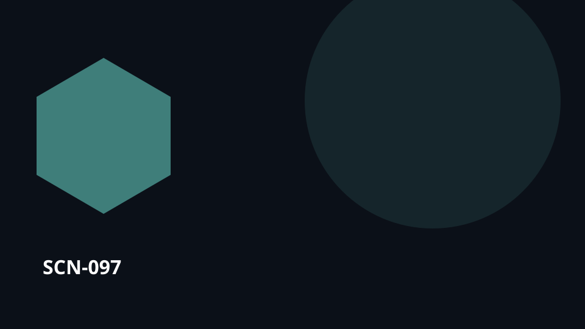

SCN-097 · Remember & Improve
A restaurant wants to know which changes actually improved service
A restaurant asks which changes actually improved service. The work is over, but the learning can still be lost. Koali links outcomes back to the decisions, assumptions, cases and evidence that produced them, so experience can change the next procedure, project or decision.

SCN-097 — A restaurant wants to know which changes actually improved service
Universal pattern — Compare cases, seasons, incidents, or measures to detect recurrence and change.
Pattern family — PAT-20 See patterns over time
Situation
A restaurant wants to know which changes actually improved service. Individual cases make sense on their own, but the real value comes from comparing them across time to detect recurrence and change.
What is usually lost
The result ends up in a report or in a few people’s memory instead of improving the next decision.
With Koali
Kristal keeps the relevant knowledge objects, sources, history, relationships, versions, and evidence connected. Konnaxion lets the relevant people discover one another, contribute context, learn, discuss, or co-create around those same objects. Orgo turns the resulting need, decision, or intervention into routed work with responsibilities, dependencies, evidence, and closure.
Loop
change → period → results → comparison → lesson → new standard
Usage palette
remember · understand · choose
Component roles in this scenario
- Kristal ●●●●○ — keeps the knowledge, provenance, relationships, and memory needed to understand the situation.
- Konnaxion ●●●○○ — connects the people who can add, challenge, teach, learn, or interpret the shared context.
- Orgo ●●○○○ — takes over when a check, decision, request, or intervention must become tracked work.
What makes this characteristically Koali
The value is not any one isolated feature. It is preserving the same context across change → … → new standard so knowledge, people, choices, work, and memory remain connected.
Transferable to
research · projects · public-service
The domain changes; the pattern remains: Compare cases, seasons, incidents, or measures to detect recurrence and change.
Canonical anchoring
Signature patterns: SIG-01
Related possibility references:
POS-KNOW-004POS-GOV-001POS-ORG-005
These references support the architectural composition of the scenario; they do not by themselves validate the full scenario at runtime.
Status
COMPOSED · runtime UNVERIFIED
This scenario is an editorial use case grounded in the documented capability composition. Do not present it as a proven deployment without additional runtime evidence.